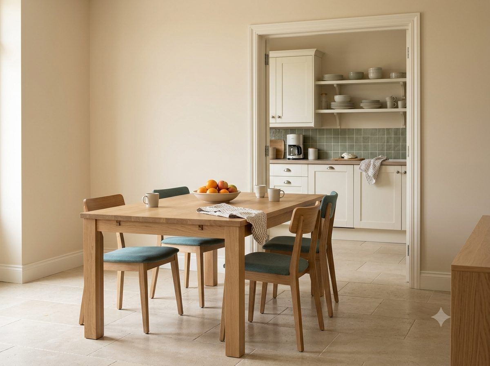

About Clean Safita
A cleaner home, with a more personal touch.
Who We Are
Clean Safita is a local home-cleaning service, built around the homes of Safita and nearby villages.
We started with a simple idea: cleaning should feel reliable and straightforward, not complicated. From how you book to how we care for your home, we've tried to keep things simple, respectful, and personal — the way a local service should feel.
- Reliable, straightforward booking
- Care and attention in every visit
- A service that feels personal, not impersonal

What Matters to Us
Care
We treat every home with attention and respect.
Reliability
We aim to make the cleaning process simple and dependable.
Simplicity
Clear services and a straightforward booking experience.
Local
Built around the homes and communities of Safita and nearby villages.
How We Think About Cleaning
Cleaning isn't just about making a room look clean. It's about helping people feel more comfortable in their own home.
Our Approach
Listen
We start by understanding what your home needs.
Understand
We plan the visit around your home's specifics.
Clean
We carry out the cleaning with care and attention.
Care
We treat your home the way we'd want ours treated.
Ready for a Cleaner Home?
Tell us what you need, and we'll take it from there.